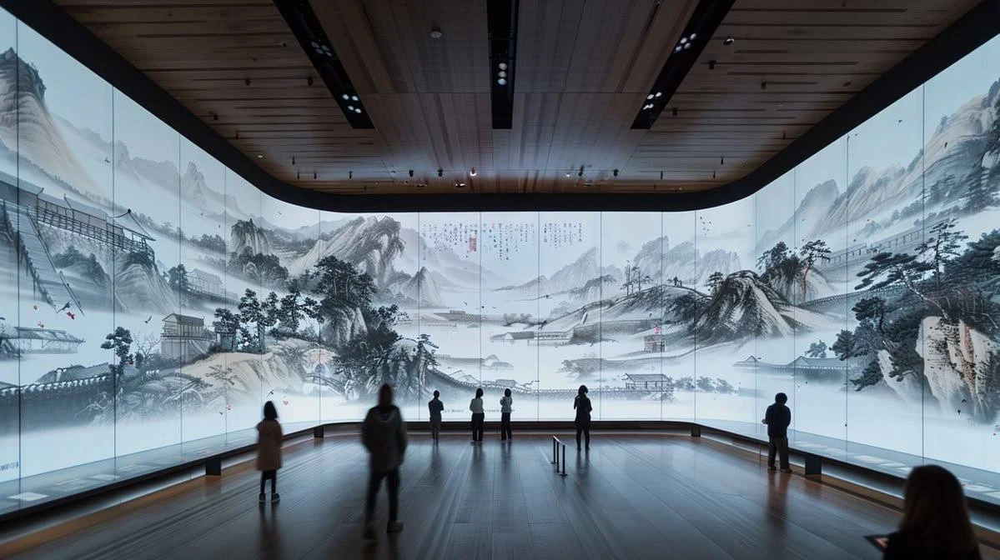
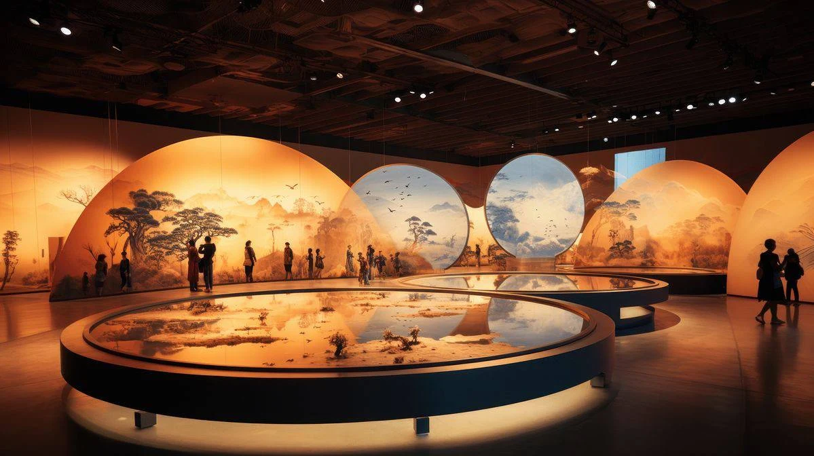

0:00–0:10
Пробуждение пространства
Из дымки проявляются река, лес и горы. Медленное движение вперёд.

Панорамное путешествие по природе Якутии, в котором пространство оживает вслед за ритмом, а отдельные сцены складываются в непрерывный цикл жизни.


Объёмные природные панорамы и небольшие события внутри них создают ощущение живого пространства. Камера движется плавно; близкие планы животных, растений и людей чередуются с масштабными ландшафтами.
Изображения раскрываются через дымку и свет. Реакция на удары бубна может строиться на вертикальных импульсах, сферических волнах или расходящихся волнах с лёгким глитчем по краям. Это варианты для согласования, не одновременно действующие эффекты.
Цель – показать природу и жизнь Якутии через узнаваемые сюжеты без повторяющихся сцен. Изображение сохраняет реалистичную фактуру, движение внутри кадров и глубину перспективы.
Непрерывное путешествие камеры от водного пейзажа через тайгу, поселения и северные просторы к зимней дороге. В каждом эпизоде своя сюжетная деталь.
На панорамном фоне появляются и уходят отдельные окна с природными сюжетами. Весенняя река переходит в летнюю долину, затем в осень и зиму. Сцены перекрывают друг друга, создавая живую композицию.
К финалу окна растворяются. Возвращаются знакомая речная панорама, дымка, свет и движение воды – переход в начало лупа.
Видео: реалистичное панорамное путешествие с последовательной сменой самостоятельных сюжетов. Анимация: живые окна-сцены на общем фоне, которые появляются, движутся и исчезают по хронометражу. Ритм: вертикальные импульсы, сферы или расходящиеся волны на ударных акцентах. Завершение: бесшовный переход к первому кадру.
Из дымки проявляются река, лес и горы. Медленное движение вперёд.
Скальные берега, широкая вода, маленькая лодка вдали.
Приближение к берегу: лодка, две фигуры и сеть.
Крупная ветка лиственницы; за ней охотник с собакой на тропе.
Охотник продолжает путь; медведь на удалённом участке другого берега.
Листья и ягоды крупно; взрослый и ребёнок с корзиной.
Луг у озера, дома и лошади вдали, спокойное движение травы.

Олениха с оленёнком, стадо и пастух; птицы над открытым ландшафтом.

Упряжка пересекает снежную долину. Замедление камеры, тёплое жильё вдали.

Референсные изображения иллюстрируют настроение эпизодов. Точное соответствие кадров анимационному плану уточняется при сборке.
Панорама, затем раскрывающаяся хвоя лиственницы.
Рыбаки с сетью, рыба под водой; ветка остаётся.
Птицы и олениха с оленёнком сменяют ветку.
Рыбаки, птицы, олени; появляется медведь на поляне.
Рыбаки и птицы уходят. Олени и медведь ведут к лету.
Олени, затем крупный план брусники.
Ягоды, собиратели и освещённая хвоя.

Собиратели, хвоя; медведь на отдельной поляне.

Корзина собирателей, золотящаяся хвоя, уход медведя.
Собиратели направляются домой; появляется охотник с собакой.
Собиратели и охотник; дом с тёплым окном.
Охотник, дом, растение под снегом и стадо.
Дом, стланик и стадо; появляется упряжка.
Дом и растение под снегом, стадо и упряжка уходят.
Дымка возвращает первую речную панораму; бесшовное замыкание.